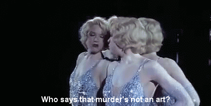
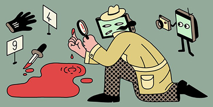

Krim
Hva er krim?
Kriminallitteratur, ofte bare kalt krim, er en samlebetegnelse for underholdende, spenningsfylt litteratur om etterforskning og oppklaring av en forbrytelse.
Sjangeren omfatter forskjellige litterære uttrykksformer som noveller, romaner, tegneserier, fortellinger i ukeblader og seriehefter.Fra den tradisjonelle detektivromanen har det utviklet seg ulike typer kriminallitteratur, som politiromanen, spion- og agentromanen og thrilleren. Krimromaner står for en svært stor andel av boksalget i Norge.

| Bok | Forfatter | Utgivelseår |
|---|---|---|
| I Was Dora Suarez | Derek Raymond | 1990 |
| The Late Show | Michael Connelly | 2017 |
| Berge | Jan Kjærstad | 2017 |
| Roman om en forbrytelse | Sjöwall og Wahlöö | 2006 |
| Når mørket faller | Ian Rankin | 2000 |
| Det siste gode kyss | James Crumley | 2003 |
| Mord i mørket | Dan Turéll | 1991 |
| Hvit som snø | Jon Michelet | 1980 |
| The Twelve | Stuart Neville | 2009 |
| Bad Penny Blues | Cathi Unsworth | 2009 |
